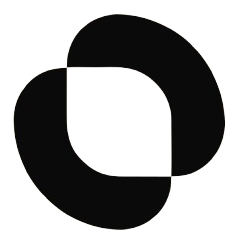

Simplicity is a feature.
Business software shouldn’t require a manual to understand.


The idea behind OMINO
Modern businesses generate more data than ever, yet the people running them still jump between disconnected tools to understand what is happening.
Commerce, POS, inventory, customers, payments and intelligence — connected through one system.
Story / 01
Businesses don’t need another dashboard. They need clarity.
A business owner may already have Instagram, WhatsApp, a POS, a website, a spreadsheet, inventory software, a payment provider, a customer list, and analytics. None of these systems truly understand the business as a whole.
All of these signals converge into one system.

One source of truth. One intelligent layer.
Philosophy / 02
Business software shouldn’t require a manual to understand.
Numbers are only useful when they help someone know what to do next.
AI should understand context, recommend actions, and eventually help execute them.
Online sales, physical sales, inventory, customers and payments shouldn’t live in separate worlds.
Difference / 03
Intelligence / 04
OMINO doesn’t simply answer questions. It understands business context.
Why did my profit drop this month?
Revenue increased 8%, but gross profit decreased 4%.
Here are the actions I recommend.
Future / 05
What happened.
Why it happened.
What needs attention.
What opportunity exists.
What should happen next.
And with approval — OMINO helps execute it.
Verticals / 06
The same operating system. Different numbers. No separate product pages.
OMINO starts by solving real problems for businesses in Palestine, with a product architecture designed to grow beyond one market.
Founding / 07
The first 50 businesses are not just customers. They are the businesses helping shape OMINO.
Become a founding businessAI Business OS
One intelligent system for your business.